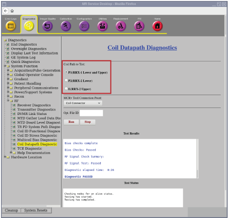
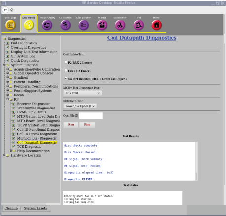
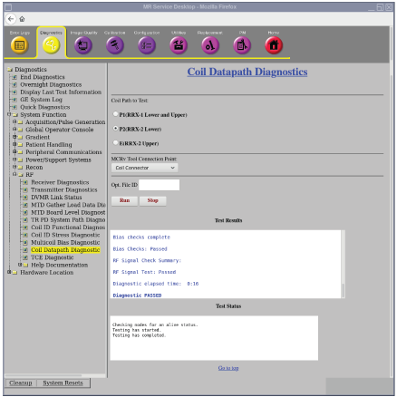
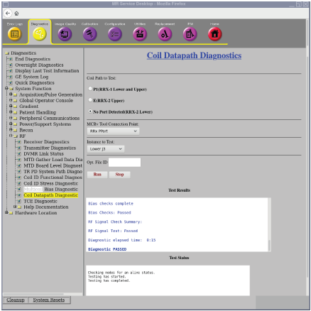
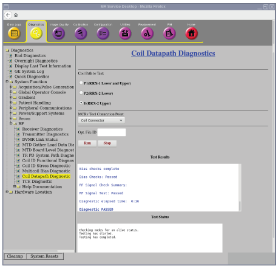
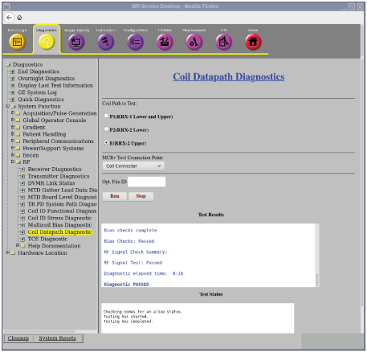
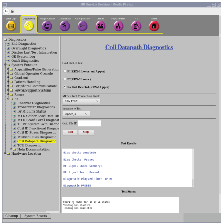
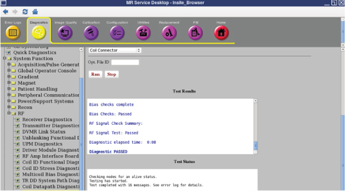
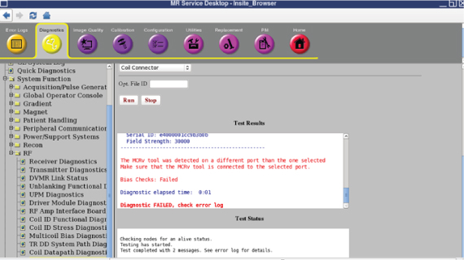
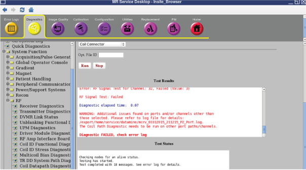

Launch coil datapath diagnostics from ICW > Coil Data Path Diagnostics or use these steps:
Click Service Browser on the Service Desktop Manager to launch the Common Service Desktop.
Click the Diagnostics tab.
Use one of these selection paths: System Function > RF > Coil Data Path Diagnostics or Hardware Location > Magnet Room > Coil Data Path Diagnostics.
Figure 1. Coil datapath diagnostics

In the Coil Path to Test list, select a path.
In the MCRv Tool Connection Point list, select a connection point.
If not already done, physically connect the MCRv tool to the selected connection point.
Figure 2. TP1 point selectionFigure 3. TP2 point selection

Figure 4. TP3 point selection

Figure 5. TP4 point selection

Figure 6. TP5 point selection

Figure 7. TP6 point selection

Figure 8. TP7 point selection

To specify a custom log filename, enter text in the Opt. File ID field.
Click Run.
Results
The test validates both the signal (RF) path and the control (DC) path for that connector. A Pass in the test means that all receive and control circuitry is operating and you may stop this procedure. Figure 9. Passed test

Failed tests identify a problem that you must resolve before continuing.
Figure 10. Failed test - wrong port

Figure 11. Failed test - issue found in port/channel

Note Refresh the diagnostic web page after you finish connecting the cable to the other port. If you do not refresh the diagnostic web page, an error message appears after you click Run. Cable track changed after UI was loaded. Diagnostic FAILED, please reload diagnostic web page.